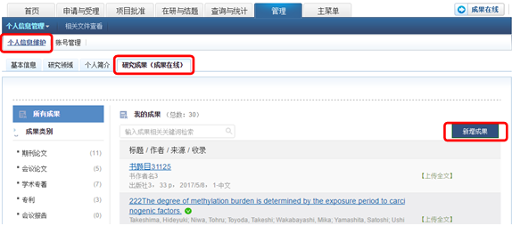
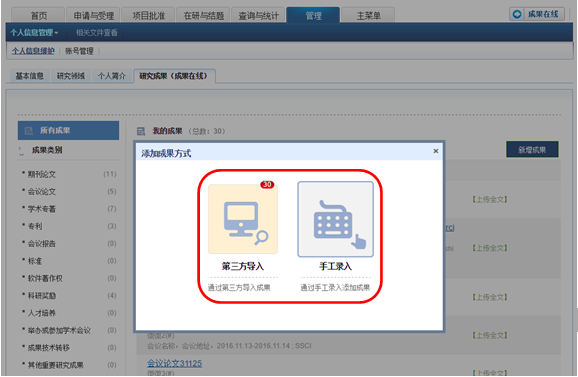
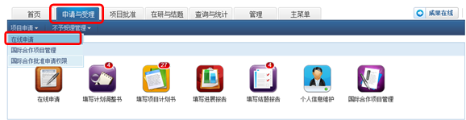
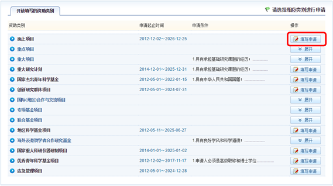
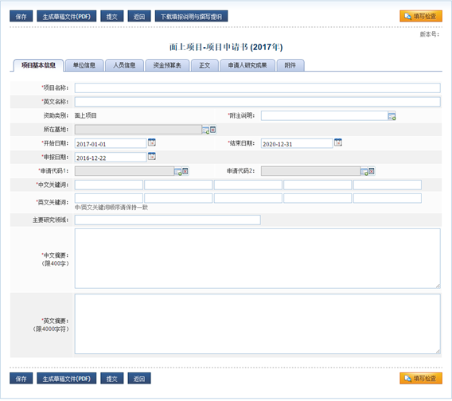
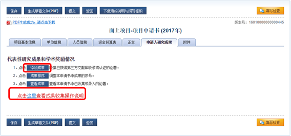
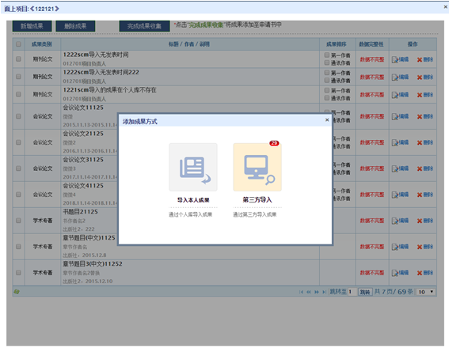
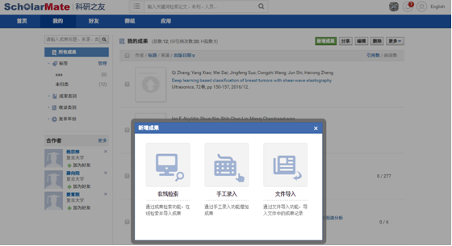
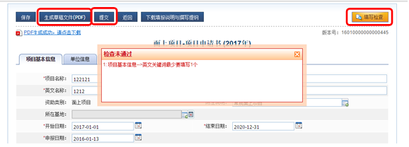
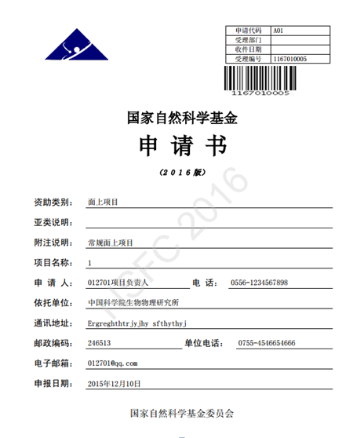

填写项目申请书


填写项目申请书四个步骤：
一. 登录系统后新增申请
二. 按要求填写申请书详情
三. 检查填写内容并提交
四. 打印纸质材料，签字盖章
1. 项目申请人需使用自己的帐号密码，登入科学基金网络信息系统(ISIS)。
1.1 选择【管理】菜单，依序选择【个人信息管理】，【个人信息维护】子菜单，选择【研究成果】选项卡，点击【新增成果】，选择一种方式可添加成果并维护个人成果库。


1.2 选择【申请与受理】菜单，在子菜单【项目申请】下，点击【在线申请】。

1.3 点击【新增项目申请】，同意相关条款规定，找到相应的资助类别，点击【填写申请】。

2. 项目申请人进入申请书详情界面，逐项填写项目信息。

2.1 选择【申请人研究成果】选项卡，点击【添加成果】。初次使用可以点击链接查看成果收集操作说明。

2.2 申请人可以对已有成果进行维护；点击【新增成果】，可选择一种方式可导入个人成果。


2.3 如选择【导入本人成果】，可选择成果并点击【导入成果至申请书】将成果从个人成果库导入。

2.4 如选择【第三方导入】，可从科研之友导入成果。点击【添加成果】可进入科研之友维护成果，选择成果点击【导入成果至申请书】将会科研之友中的成果加入申请书。


3. 页面信息填写完成后，点击【填写检查】，确保通过检查后，点击【生成草稿文件(PDF)】，预览检查无误后点击【提交】按钮审核。

4.打印纸质材料，并给予依托单位盖章签字。

版权申明：本文系“科研之友”公号原创的文章，如需转载请发信至邮箱：operations@scholarmate.com，如有未经授权转载，后果自负。
科研之友微信号：keyanzhiyou
投稿、意见，请直接回复或发信至：operations@scholarmate.com
分享与发现论文、专利、项目，提高科研影响力。

长按可识别图中二维码，关注科研之友微信公众号。